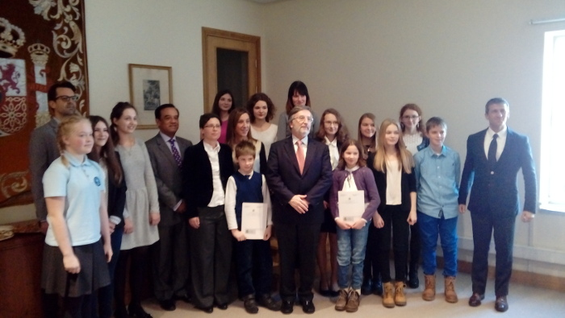

Gazeta ZSO nr II w Opolu
Numer 3/2017
Konkurs "Giner de los Rios"

Liwia Eliasz z kl. 2c i Anna Herud z III A zostały laureatkiami ogólnopolskiego konkursu na pracę pisemną w języku hiszpańskim "Giner de los Rios", organizowanym przez Biuro Radcy ds. Edukacji Ambasady Hiszpanii. Wręczenie nagród odbyło się 13 grudnia w Ambasadzie Hiszpanii w Warszawie.
Liwia Eliasz za pracę "Querido mio" ("Mój drogi"), w formie listu skierowanego do przyjaciela w śpiączce, którego zaprasza w podróż do Hiszpanii zajęła 2.miejsce. Anna Herud z kolei opisała bitwę pod Lepanto, w której Miguel de Cervantes stracił dłoń i jej pracy "La batalla mas memorable de los siglos pasados, presentes y venideros" ("Najbardziej zapamiętana bitwa wieków przeszłych, teraźniejszych i przyszłych") jury przyznało 3. miejsce.
Uczennice otrzymały nagrody z rąk Ambasadora Hiszpanii i Republiki Peru. W konkursie zostało wyłonionych jedynie 12 laureatów, a ZSO nr II w Opolu jest jedyną szkołą, z której nagrodzono aż dwie prace. Obydwie zostały napisane pod kierunkiem nauczycielki języka hiszpańskiego, Anny Andrzejewskiej.
Podpis foto
Podczas wręczenia nagród obecny był Komitet Honorowy konkursu:
Agustín Núñez Martínez, Ambasador Królestwa Hiszpanii w Polsce, Alberto Salas Barahona, Ambasador Republiki Perú w Polsce
Zofia Marzec, Dyrektor Instytutu Studiów Iberyjskich i Iberoamerykańskich UW,
Ignacio Temiño Martínez, korespondent Agencji EFE w Polsce,
Isabel Martín Benítez, Radca ds Turystyki Ambasady Hiszpanii w Polsce.
ul. Pułaskiego 3
45-048 Opole
tel. 077 45 422 86
fax 077 02 18 87
e-mail:
bez.tytulu@o2.pl
Ola Orłowska
DTP
Michał Woś
Opiekun
mgr Lucyna Rudnik
Ola Orłowska, Ania Cichy, Dagmara Cioska, Julia Nowicka, Julia Marcinów, Hania Szarzewicz, Michał Woś, Bartek Lipnicki, Jonasz Mularz, Paweł Kubacki, Mateusz Pietruszyński, Mateusz Orlik